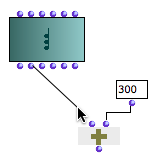
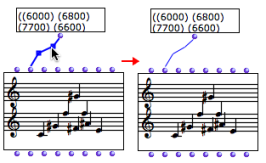
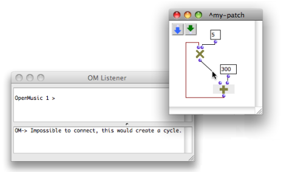

OpenMusic DocumentationHiérarchie de section : OM 6.6 User Manual > Visual Programming I > Connections
OpenMusic DocumentationHiérarchie de section : OM 6.6 User Manual > Visual Programming I > Connections
Navigation : page précédente | page suivante
Attention, votre navigateur ne supporte pas le javascript ou celui-ci à été désactivé. Certaines fonctionnalités de ce guide sont restreintes.
Connections
A connection is a link between the outlet of a box and the inlet of another box. It means that the value of the downstream box inlet will be the result of the upstream box computation.
The connections define the functional composition, that is the syntax of a visual program.
Creating and modifying connections
Creating a connection

|
A connection is created by clicking on a box output and drag the mouse cursor to the input of another box. |
Modifying a connection
Connections can be selected and modified as well :
|

|
Deleting a connection
To delete a connection
- select it and press
Backspace -
Cmdclick on the cotresponding input of the connection.
Syntactic Relevance
When boxes are being connected to each other, OM applies syntactic rules, so that the connection may be rejected. This includes :
- preventing cycles : a box can not be connected to another one if this connection creates a cycle – see example below –
- deleting existing connections when a new connection is made to an input. An input is necessarily assigned a single value and therefore cannot be connected to more than one box.
Preventing Cycles

One of the inputs of the om* box is connected to the om+ box. Om* will then need to know the result returned by om+ to perform its computation. In this case, OM "refuses" to connect the result of the multiplication to the inlet of the addition, as shown in the Listener.
Références :
Plan :
Navigation : page précédente | page suivante
A propos...(c) Ircam - Centre Pompidou